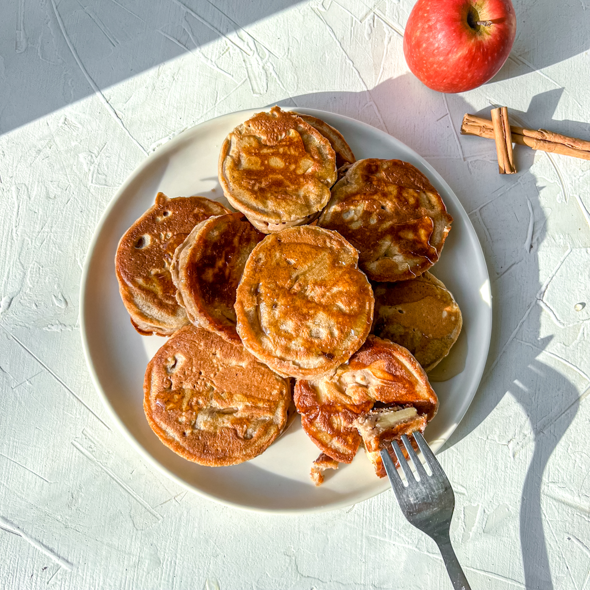

Apple Pancakes

Description
Apple pancakes have become one of my favorite breakfasts nowadays.
Dead simple to make and does not take that many ingredients either, pairs nice with weekends, coffee and some honey.
Ingredients (Hefty portion):
- Two large apples.
- 1 egg
- Milk
- Flour
- Cinnamon
- Touch of salt
- Butter or Vegetable oil
When cooking this recipe I don't really follow specific amounts for milk and flour.
My strategy is pour a decent amount of milk and then keeping adding flour and mixing until the consistency fits my taste.
If you use more milk, your pancakes will be more crepe like. If you put more flour your pancakes will be a bit thicker.
How to cook:
- Grate up apples (don't worry too much about the skin.
- Squeeze out juice from grated apples (bonus points if you save the juices)
- Add egg and milk. Start mixing.
- Add flour and mix. Keep doing so until consistency seems right to you.
- Add touch of salt and cinnamon.
- Heat up a pan, add oil of preference and cook those bad boys.
- Serve with toppings of your choice (My personal favorite is honey)
Enjoy.